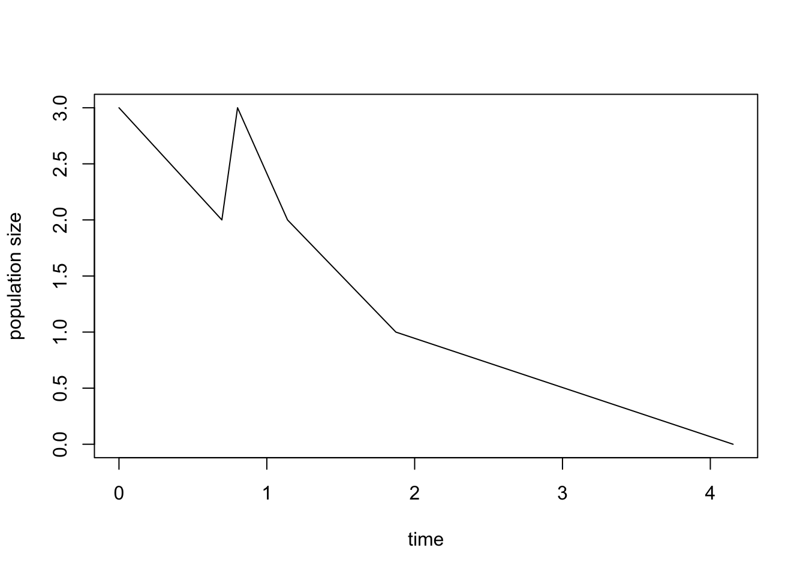
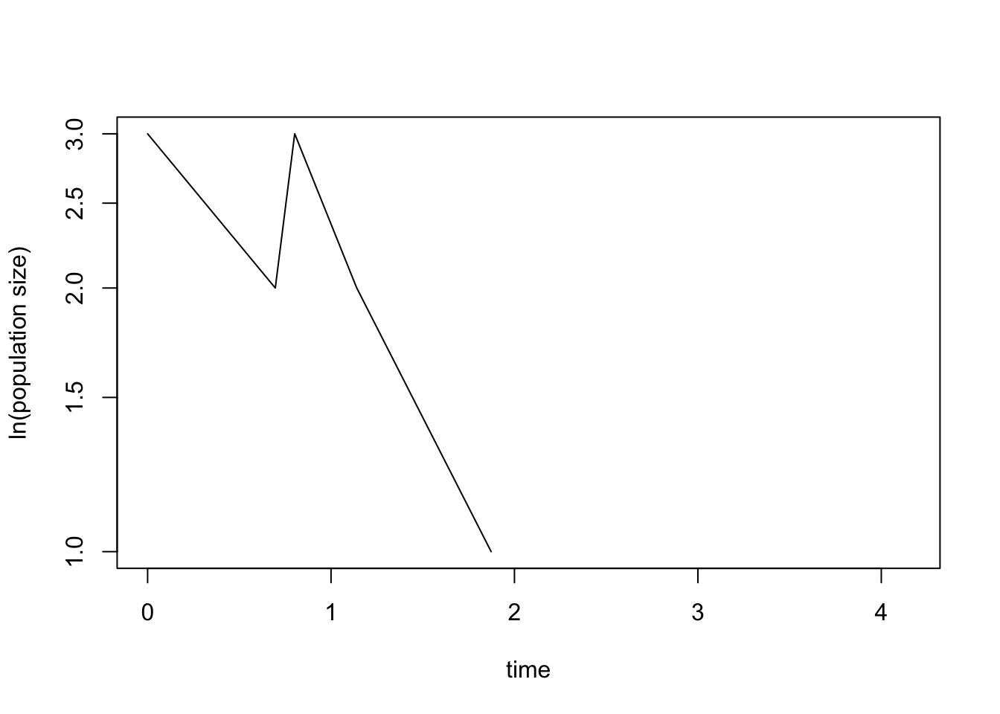

Demographic Stochasticity
In this exercise, we will explore through stochastic simulations a simple birth-death process. In the lecture, we have seen that the deterministic equation for exponential growth,
\[ \frac{\mathrm{d}N}{\mathrm{d}t}=N(b-d)=Nr \] describes the mean over many simulations. These simulations take into account that, even if all individuals in a population are genetically identical, they will still differ in the number of their offspring and their age at death. This is due to chance events (some people are hit by a falling tree while others are not…). Fluctuations due to such chance events acting at the level of the individual are called demographic stochasticity. In this exercise, we will explore the consequences of demographic stochasticity for population viability.
More specifically, stochasticity enters our simulation by deciding randomly whether the next event in a population is a death or a birth. If death occurs, then population size decreases by one and if birth occurs, population size increases by one. The probabilities with which these two events occur are proportional to \(d*N(t)\) and \(b*N(t)\), respectively. To implement this idea in R we can use the function sample(x, size, prob), where \(x = c(-1, 1)\) is the vector of possible events (-1 in case of a death and 1 in case of a birth), \(size = 1\) indicates how many events occur at any given point in time, and \(prob = c(d*N, b*N)\) gives the vector of probabilities with which the two events occur. Since only the magnitude of birth and death relative to each other matters, we can also use \(prob = c(d, b)\).
sample(x =c(-1, 1), size = 1, prob = c(d = 0.2, b = 0.3))
# in fact, instead of evaluating the above line of code ten times we can simply evaluate
sample(x =c(-1, 1), size = 10, prob = c(d = 0.2, b = 0.3), replace = TRUE) # here we had to add the argument replace=TRUE to the function to indicate that earlier outcomes do not effect the probabilities of future outcomesIf the population death and birth rates are given by \(d*N\) and \(b*N\), respectively, how much time elapses between the occurrence of two events? This waiting time depends on the probability that neither a death nor a birth event occurs at a given moment. Thus, the length of the waiting time between two events is also a random variable and its distribution is given by the exponential distribution. We can determine the length of the waiting time by drawing a random number from the exponential distribution after a death or a birth has occurred using rexp(n = 1, rate = d * N + b * N), where \(n = 1\) indicates that we are drawing a single waiting time and \(rate = d * N + b * N\) is the total event rate. For example
d <- 0.2
b <- 0.3
N <- 10
rexp(n = 1, rate = d * N + b * N)gives the waiting time between two events. Importantly, rexp(n = 1, rate = d * N + b * N) produces a different value each time you execute the above command, this waiting time is also a ransom variable.
In the following piece of R-code, we define a function that puts all these pieces together and creates a stochastic population dynamical time series. The function has four arguments: N0 (the initial number of individuals in the population), Nmax (when the simulated population has reached this number the simulation stops (the simulation also stops once the population has gone extinct (N=0)), d (the per-capita death rate) and b (the per-capita birth rate). At the heart of our function is a while-loop, so that the algorithm is repeated until the population is either extinct or the population size has reached Nmax.
time_series <- function(N0, Nmax, d, b){# this defines a function with the name "time_series". It has four arguments: N0, Nmax, b, d
N <- N0 # initial value for population size
t <- 0 # initial value for time
output <- data.frame(t, N) # creates a data frame with two columns (one for time and one for population size) in which we store the results from the simulation; we could also have used a matrix instead
while (N < Nmax & N > 0) {# loop runs until N=0 or N=Nmax
dt <- rexp(1, rate = d * N + b * N) # time to next event drawn from exponential distribution
event <- sample(c(-1, 1), 1, prob = c(d * N, b * N)) # determines whether next event is birth or death
t <- t + dt # updates time
N <- N + event # updates population size
output <- rbind(output, c(t, N)) # updates output by adding a new row
}
return(output) # instruct the function to return the output data
}We can evaluate the function by writing
time_series(N0 = 3, Nmax = 10, d = 0.2, b = 0.3)## t N
## 1 0.0000000 3
## 2 0.8111413 4
## 3 1.6376511 5
## 4 2.3689251 6
## 5 2.4565727 5
## 6 2.6628529 6
## 7 2.7374410 7
## 8 2.9246587 8
## 9 3.1589787 9
## 10 3.4899396 10Thus, in this case we have N0=3, Nmax=10, d=0.2, and b=0.3. The output of the function is a data frame with two columns. The first column gives the time at which an event occurs and the second column gives the updated population size. Each time you evaluate the function you obtain a different output. This is due to the stochastic nature of the simulation. Let us visualize a time series (now for Nmax=200).
demographic.stoch <- time_series(3, 200, 0.2, 0.3)
plot(demographic.stoch, type="l", xlab="time", ylab="population size")
Maybe in your particular simulation the population went extinct? If so, execute the function again to see whether it might then have reached Nmax before going extinct.
It is also informative to use the plot-option type = "s" (s for step), which reveals the discrete nature of the model we are studying: a change in population size occurs through either an increase of 1 or a decrease of 1.
demographic.stoch <- time_series(3, 50, 0.2, 0.3)
plot(demographic.stoch, type="s", xlab="time", ylab="population size")
This option also reveals more clearly that the time span between events is variable (because events occur randomly and the time span between events is determined by a draw from a exponential distribution). Furthermore, we can see that time span between events decrease as population size increases. This is because the population wide birth rate (\(b*N(t)\)) and death rate (\(d*N(t)\)) increase with population size.
Since we are dealing with a stochastic version of exponential growth we might want to plot the population size on a log-scale.
plot(demographic.stoch, log="y", type="s", xlab="time", ylab="ln(population size)")
# The option log="y" automatically produces a plot where population size is on a logarithmic scale. However, you will get a warning whenever your simulation results in extinction because the logarithm of 0 is minus infinity.You can vary the parameters N0, Nmax, d and b and investigate their effect on the time series, more specifically, whether or not the population goes extinct.
What is the effect of our chosen set of parameters on the probability that the population size reaches N=Nmax before it goes extinct? To investigate this, we have to look at many realisations of the simulation and it is easier to do this by automatizing this process. We start by setting the parameters where we add one additional parameter, sim, that determines how many times the simulation is repeated. We can do this using the same construction we used when investigating many runs of environmental stochasticity.
N0 <- 3
Nmax <- 50
d <- 0.2
b <- 0.3
sim <- 10 # this sets the number of simulations
results <- list() # using the list variable allows us to save results of all iterations of the function time_series, that is, we can save several data frames in it
for (i in 1:sim) {# to create sim different simulations, we embed the function time.series into a for-loop
results[[i]] <- time_series(N0, Nmax, d, b) # adds the result of a simulation to the results, note that we have to use [[]] to access list entries
}Before we can plot the results, we have to determine the length of the x-axis (time) in the plot. We do that by determining the length of the longest simulation run.
maxt <- c() # creates a vector in which we store the length of the different time series
for (i in 1:sim) {
maxt[i] <- max(results[[i]][1]) # determines the length of the ith time series and stores the result in the object maxt
}
tmax <- max(maxt) # the length of the longest time series is assigned to the parameter tmaxNext comes the code that produces the plots.
colors <- rainbow(length(results)) # sets number of colors equal to number sim
plot(results[[1]], type="l", log="y", ylim=c(1, Nmax), xlim=c(0, tmax), col=colors[1], xlab="time", ylab="ln(population size)") # plots the first simulation
for (i in 2:sim) {# this for-loop adds all further simulations to the same graph
lines(results[[i]], type="l", col=colors[i])
}
# Let us add a line showing the deterministic dynamics, that is, in the absence of demographic stochasticity.
curve(N0*exp(x*(b - d)), from = 0, to = tmax, add=TRUE)
This results in a figure showing ten simulation runs. From this figure, you can visually count how many of these runs result in extinction and how many in exponential growth.
Task
Investigating the probability of extinction in dependence of four different parameters (N0, Nmax, d, b) is a bit cumbersome. Let us therefore set the maximum population size to 200 (Nmax=200) and the death rate equal to 1 (d=1) and only vary N0 and b. Vary b according to b = (0.9; 1; 1.1; 1.2; 1.5) and initial population size N0 according to N0 = (1; 3; 5; 10; 50). Varying both parameters together gives you 25 different parameter combinations that you can arrange in a table with five rows (N0) and five columns (birth). In each cell of this table, report the proportion of ten runs that result in extinction. Which conclusions you can draw from your results about the effect of N0 and b on the probability of extinction? Are there parameter combinations that you feel you need to add to your analysis to get a better understanding?
For the model above, it can be shown mathematically that the probability of extinction, \(u(N_0)\), of a population consisting originally of \(N_0\) individuals is given by the following formula: \[ u(N_0)= \begin{cases} 1 & \mathrm{for}\,\,\, b\leq d\\ (\frac{d}{b})^{N_0} & \mathrm{for}\,\,\, b>d. \end{cases} \] The following code produces a five by five matrix with the parameters as given under (1) but with all entries calculated according to the analytical formula. How well do your simulation results agree with the results predicted based on the analytical formula? If you see large differences between your results and the analytical expectation, what do you think could be the explanation?
analytical_results <- matrix(nrow = 5, ncol = 5) # defines an empty five by five matrix in which we can store the results
death <- 1
N0_sizes <- c(1, 3, 5, 10, 50)
birth_rates <- c(0.9, 1, 1.1, 1.2, 1.5)
for (i in 1:5){ # two nested for-loops, the first one walks through the rows and the second one walks through the columns
for (j in 1:5){
analytical_results[i,j] <- round(min(c(1,(death/birth_rates[j])^N0_sizes[i])), 3) # results are rounded to three digits after the comma
}
}
analytical_results # shows the resulting matrixanalytical_results <- matrix(nrow = 5, ncol = 5) # defines an empty five by five matrix in which we can store the results
death <- 1 N0_sizes <- c(1, 3, 5, 10, 50) birth_rates <- c(0.9, 1, 1.1, 1.2, 1.5)
for (i in 1:5){ # two nested for-loops, the first one walks through the rows and the second one walks through the columns for (j in 1:5){ analytical_results[i,j] <- round(min(c(1,(death/birth_rates[j])^N0_sizes[i])), 3) # results are rounded to three digits after the comma } }
analytical_results # shows the resulting matrix